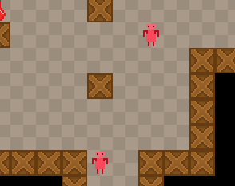

In this tutorial we're adding randomly wandering enemies.
We're going to use the same approach for movement as we did with our character, except that all the internal logic of an enemy, including its movement, is going to be stored in a separate class, Enemy.
The class extends the regular FlxSprite class, and makes use of a FlxPath object for navigation.
An random time interval will also be used to make the unit stop for a little bit after wandering around, and then resume his walking.
Firstly, here's the graphic for the enemy:

Put it in the assets/images/ folder, and save it as enemy.png.
Below is the full class for Enemy.hx, which I will explain after the code.
package ;
import flixel.FlxSprite;
import flixel.tile.FlxTilemap;
import flixel.util.FlxPath;
import flixel.util.FlxPoint;
/**
* Enemy
* @author Kirill Poletaev
*/
class Enemy extends FlxSprite
{
public var path:FlxPath;
private var wandering:Bool;
private var wanderTicks:Int;
private var nodes:Array<FlxPoint>;
private var tilemap:FlxTilemap;
public function new(tilemap:FlxTilemap)
{
super();
this.tilemap = tilemap;
loadGraphic("assets/images/enemy.png", true, PlayState.TILE_WIDTH, PlayState.TILE_HEIGHT);
animation.add("down", [0, 1, 0, 2]);
animation.add("up", [3, 4, 3, 5]);
animation.add("right", [6, 7, 6, 8]);
animation.add("left", [9, 10, 9, 11]);
path = new FlxPath();
animation.play("down");
wandering = true;
wanderTicks = Std.int(Math.random() * 300);
}
override public function update() {
super.update();
if(wandering){
if (wanderTicks > 0) {
wanderTicks--;
} else {
wanderTicks = Std.int(Math.random() * 300);
var startPoint:FlxPoint = FlxPoint.get(x + PlayState.TILE_WIDTH / 2, y + PlayState.TILE_HEIGHT / 2);
while (nodes == null || nodes.length == 0) {
var tileCoordY:Int = Std.int(startPoint.y / PlayState.TILE_WIDTH + Math.ceil(Math.random()*6) - 3);
var tileCoordX:Int = Std.int(startPoint.x / PlayState.TILE_HEIGHT + Math.ceil(Math.random()*6) - 3);
var endPoint = FlxPoint.get(tileCoordX * PlayState.TILE_WIDTH + PlayState.TILE_WIDTH / 2, tileCoordY * PlayState.TILE_HEIGHT + PlayState.TILE_HEIGHT / 2);
nodes = tilemap.findPath(startPoint, endPoint);
}
path.start(this, nodes);
}
}
if (!path.finished && path.nodes != null) {
if (path.angle == 0 || path.angle == 45 || path.angle == -45) {
animation.play("up");
}
if (path.angle == 180 || path.angle == -135 || path.angle == 135) {
animation.play("down");
}
if (path.angle == 90) {
animation.play("right");
}
if (path.angle == -90) {
animation.play("left");
}
} else {
animation.curAnim.curFrame = 0;
animation.curAnim.stop();
nodes = null;
}
}
}The animations are handled in exactly the same way as we handled our hero's animations, so you'll find some similar code in the constructor and in the second half of the update() function.
The constructor of this class receives a FlxTilemap object as the parameter, which is the reference to the tilemap in our PlayState. I use the wanderTicks value to manage delays between wandering, setting this value to a random integer and decreasing the value with every frame. When the ticker reaches 0, a new path is created.
I use a bit of math and the Math.random() function to create a random destination point for the enemy, not too far from its starting position.
You can see that I use a while loop for creating a path. This is because the enemy can find itself in a position where the randomized destination point is not walkable (next to a wall, for example), and the generated path will return a null object. For this reason I keep trying to create a new path with new random coordinates until a valid path is created.
Back in PlayState.hx, there are also a few changes to be made.
Firstly, at the top of the update() function, the super.update() method needs ot be called:
super.update();Introduce a new variable, which is an array of enemies:
private var enemies:Array<Enemy>;Instantiate it in the init() function and add a few enemies using the addEnemy() method:
enemies = new Array<Enemy>();
addEnemy(10, 15);
addEnemy(12, 10);
addEnemy(15, 6);
addEnemy(20, 6);
addEnemy(12, 20);
Here's the method itself:
private function addEnemy(x:Int, y:Int):Void {
var enemy:Enemy = new Enemy(tileMap);
enemy.x = x * TILE_WIDTH;
enemy.y = y * TILE_HEIGHT;
enemies.push(enemy);
add(enemy);
}
In the end, we'll end up with a few randomly wandering enemies:
But the enemies currently do not do much, other than walk around. We'll make them chase the player when he comes too close in the next tutorial.